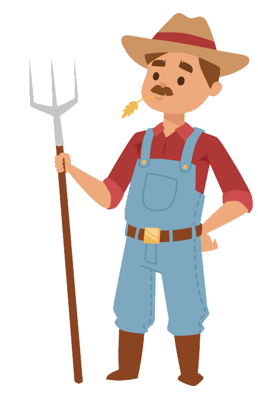
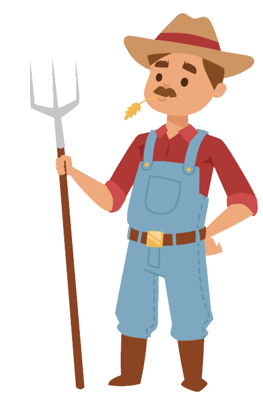

Em uma fazenda com armazenamento de 15.000 L de diesel
Nos preços atuais de diesel, significa que seu armazenamento corresponde a um investimento de R$90.150,00
Uma variação de somente 0,6% no volume de seu diesel (conforme estipulado pela ANP) representa R$ 5.409,00 perdidos
Apenas uma colheitadeira que consome 35 L/h de diesel representa por dia 5,6 % de seu investimento com diesel.
Já pensou como o tempo ocioso de suas máquinas paradas devido ao reabastecimento de seus tanques afetam os lucros de suas safras? Em como a perda da qualidade do diesel parado afeta suas colheitas?
Com um monitoramento ideal de como se comporta seus estoques, você garante maior assertividade no gerenciamento de seu diesel e principalmente de seu dinheiro
 
